مظلات المسابح في المدينة المنورة وينبع 2026
أنواع مظلات المسابح (قماش PVDF، شرائح متحركة، بولي كربونيت) ومميزاتها وأسعارها لحماية المسبح من الشمس والأتربة.
اقرأ المقال ←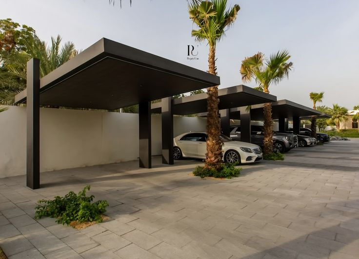
مظلات المدارس والملاعب في المدينة المنورة وينبع 2026
تظليل آمن لساحات وملاعب المدارس والروضات — أنواع المظلات ومواصفات السلامة وأسعارها للمشاريع التعليمية.
اقرأ المقال ←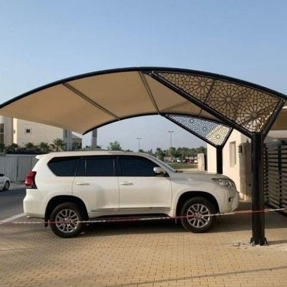
سواتر القماش للمنازل في المدينة المنورة وينبع 2026
ستائر خارجية اقتصادية للبلكونات والأسطح والحدائق — أنواع القماش ومقارنتها بالحديد والـ WPC وأسعارها.
اقرأ المقال ←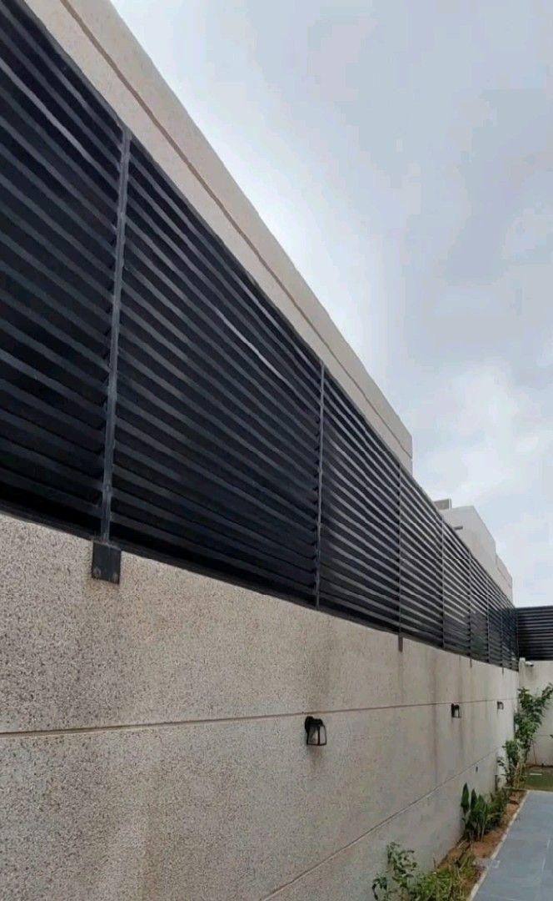
أعمال الحدادة العامة في المدينة المنورة وينبع 2026
أبواب وبوابات حديد، درابزين ودرج، شبابيك حماية وأسوار وهياكل معدنية — تصاميم حديثة وأسعار.
اقرأ المقال ←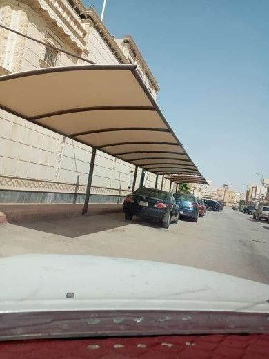
مظلات الأسواق والمحلات التجارية في المدينة المنورة وينبع 2026
تظليل واجهات المحلات والمطاعم والكافيهات وممرات الأسواق — أنواع المظلات التجارية واستخداماتها وأسعارها.
اقرأ المقال ←
أنواع المظلات وأسعارها في المدينة المنورة 2026
دليل شامل عن أنواع المظلات (PVC، قماش، هرمية، LED) وأسعارها التقريبية في المدينة المنورة وينبع.
اقرأ المقال ←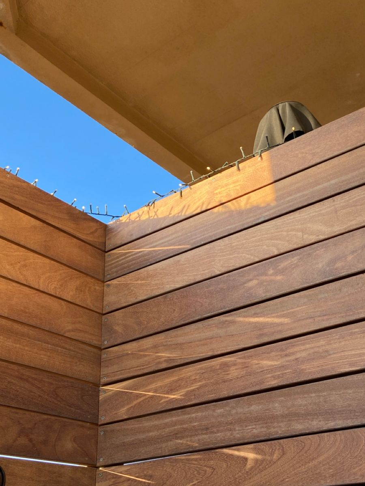
أفضل أنواع السواتر للمنازل في المدينة المنورة وينبع
مقارنة بين سواتر الحديد والخشب WPC والـ PVC — أيها أفضل للخصوصية؟ الأسعار والمميزات.
اقرأ المقال ←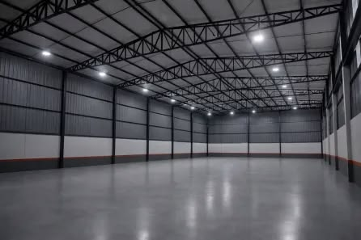
تكلفة وأنواع الهناجر في المدينة المنورة وينبع 2026
أنواع الهناجر الصناعية والتجارية والزراعية، التكلفة التقريبية، ومراحل التنفيذ خطوة بخطوة.
اقرأ المقال ←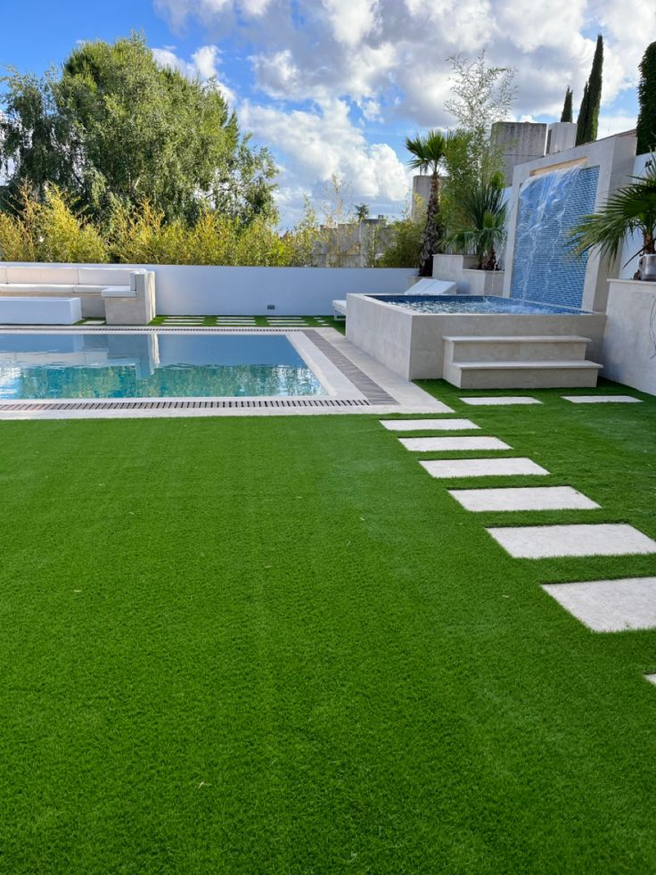
تركيب العشب الصناعي في المدينة المنورة وينبع 2026
المميزات، الأسعار، الفرق بين العشب الطبيعي والصناعي، وتنسيق الحدائق باحترافية.
اقرأ المقال ←
شبك أسلاك وتسوير أراضي المدينة المنورة وينبع 2026
أنواع الشبك، أسعار المتر، وتسوير المزارع والمستودعات والمنشآت في المدينة المنورة وينبع.
اقرأ المقال ←
الأسقف المتحركة الكهربائية في المدينة المنورة وينبع 2026
دليل أنواع الأسقف المتحركة الكهربائية — louvres وقماش وزجاج — وأسعارها ومميزاتها في المدينة المنورة.
اقرأ المقال ←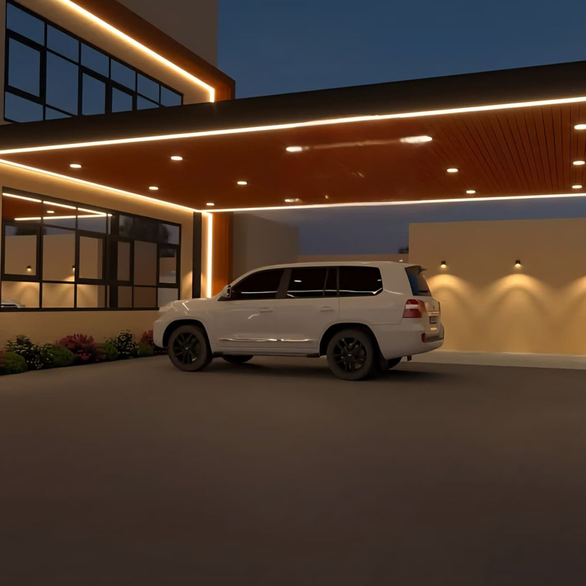
أسقف متحركة للفلل والاستراحات في المدينة المنورة 2026
أسقف لوفر ألمنيوم فاخرة للفلل والقصور والاستراحات — إضاءة LED وحساس مطر وتحكم أوتوماتيكي كامل.
اقرأ المقال ←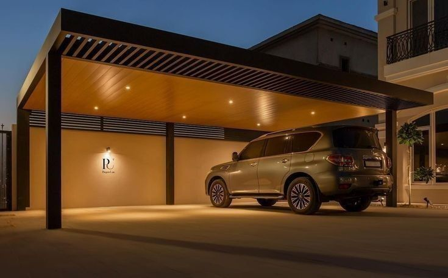
مظلات السيارات وتظليل المواقف في المدينة المنورة 2026
أنواع مظلات السيارات القماشية والحديدية وLED، أسعارها وطرق التركيب في المدينة المنورة وينبع.
اقرأ المقال ←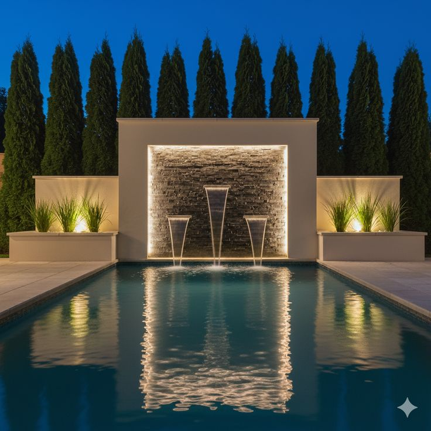
تنسيق الحدائق المنزلية في المدينة المنورة وينبع 2026
خطوات تنسيق الحديقة من الصفر — العشب والأشجار والإضاءة والشلالات والمسارات بأسلوب احترافي.
اقرأ المقال ←البرجولات الخشبية WPC في المدينة المنورة وينبع 2026
دليل برجولات خشب WPC وحديد وألمنيوم للحدائق والأسطح والمجالس — الأنواع والأسعار والتركيب.
اقرأ المقال ←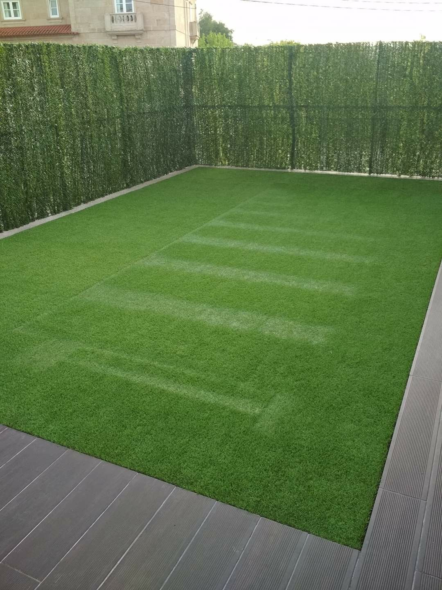
الجدار النباتي والعشب الجداري في المدينة المنورة 2026
أنواع العشب الجداري الداخلي والخارجي، مميزاته وأسعار تركيبه لتزيين جدران الفلل والمطاعم في المدينة.
اقرأ المقال ←مظلات ينبع 2026 — أنواع وأسعار وتركيب احترافي
دليل شامل لمظلات ينبع — أنواع المظلات المناسبة للمناخ الساحلي، الأسعار التقريبية، وخدمة التركيب الاحترافي.
اقرأ المقال ←تركيب مظلات المدينة المنورة — خطوات وأسعار 2026
خطوات التركيب الاحترافي للمظلات، أنواع المواد، ضمانات التركيب وأسعار التنفيذ في المدينة المنورة وينبع.
اقرأ المقال ←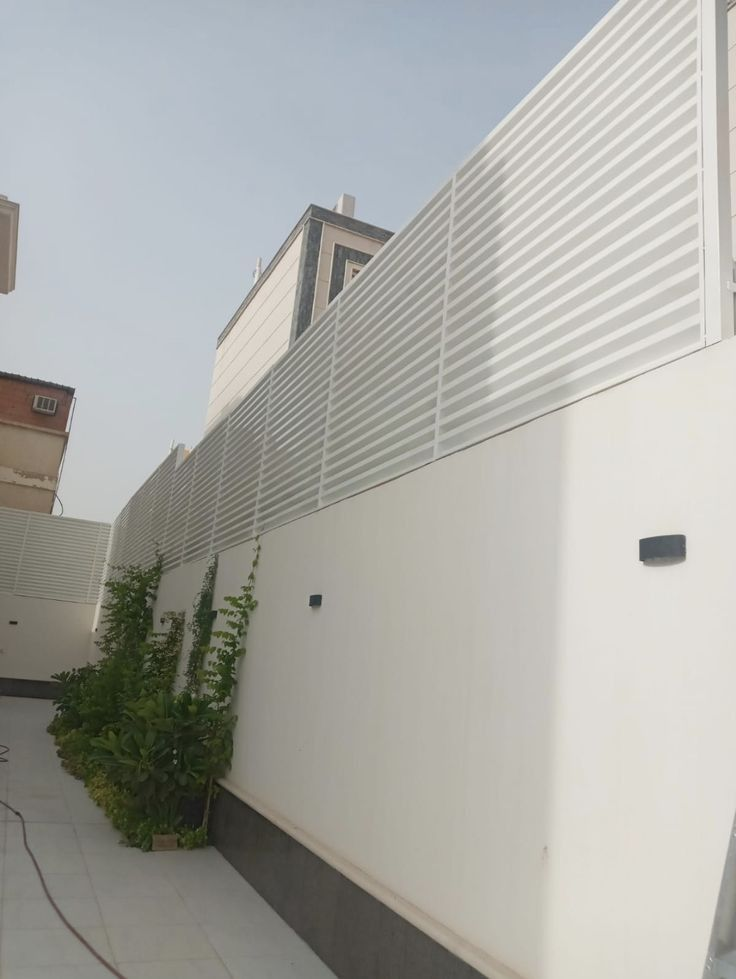
سواتر الحديد في المدينة المنورة 2026 — الأنواع والأسعار
دليل سواتر الحديد في المدينة المنورة — الأنواع والألوان والمميزات وجدول الأسعار التقريبي للمتر الطولي.
اقرأ المقال ←مظلات مواقف السيارات في المدينة المنورة 2026
أنواع مظلات المواقف للفلل والمجمعات التجارية — القماشية والحديدية وLED مع الأسعار التقريبية.
اقرأ المقال ←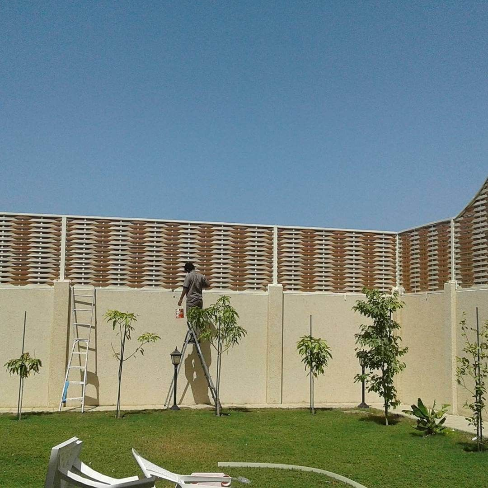
سواتر خشب WPC في المدينة المنورة 2026 — فاخرة وعازلة
مميزات سواتر خشب WPC ومقارنتها بالحديد والخشب الطبيعي — الأسعار والضمان والتركيب الاحترافي.
اقرأ المقال ←
أسعار المظلات في المدينة المنورة 2026 — دليل شامل
جدول تفصيلي بأسعار جميع أنواع المظلات في المدينة المنورة — PVC وقماش وحديد وLED وهرمية.
اقرأ المقال ←أفضل شركة مظلات في المدينة المنورة 2026
معايير اختيار أفضل شركة مظلات — الخبرة والضمان والأسعار، ولماذا مؤسسة سواتر المدينة هي الخيار الأول.
اقرأ المقال ←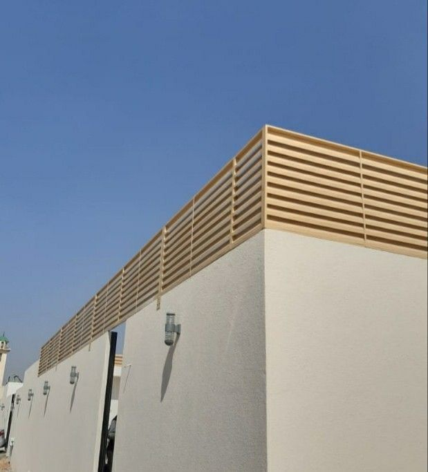
تركيب سواتر ينبع 2026 — حديد وخشب WPC
خدمة تركيب سواتر ينبع بمواد مقاومة للبيئة الساحلية — حديد مجلفن وخشب WPC بأسعار تنافسية وضمان.
اقرأ المقال ←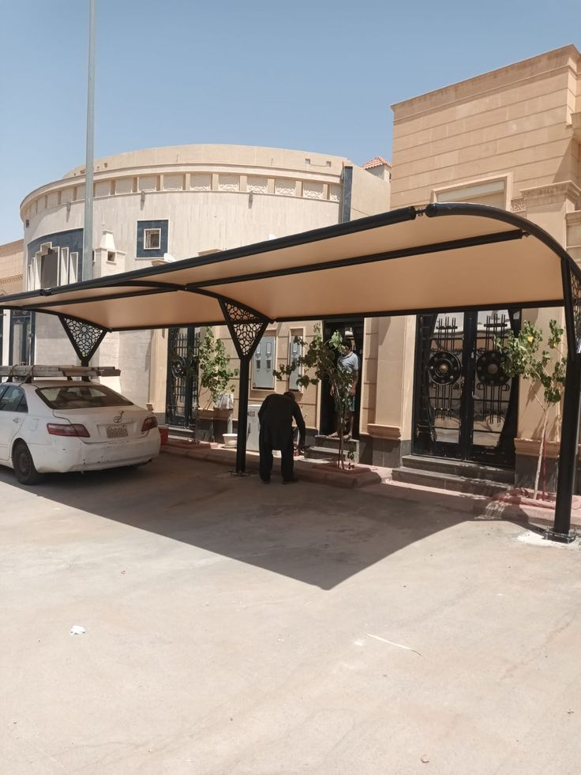
مظلات الاستراحات في المدينة المنورة 2026 — تصاميم فاخرة
أنواع مظلات الاستراحات الهرمية والقماشية وLED — تصاميم فاخرة بأسعار مناسبة في المدينة المنورة وينبع.
اقرأ المقال ←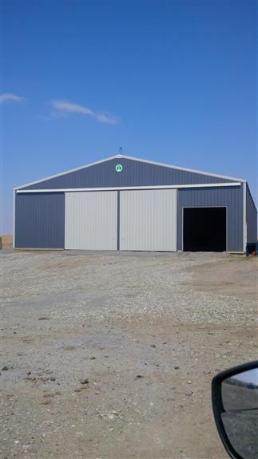
هناجر الحديد في ينبع 2026 — تصميم وتنفيذ احترافي
هناجر حديد ينبع الصناعية والتجارية والزراعية — مواصفات عالية تتحمل البيئة الساحلية مع ضمان شامل.
اقرأ المقال ←